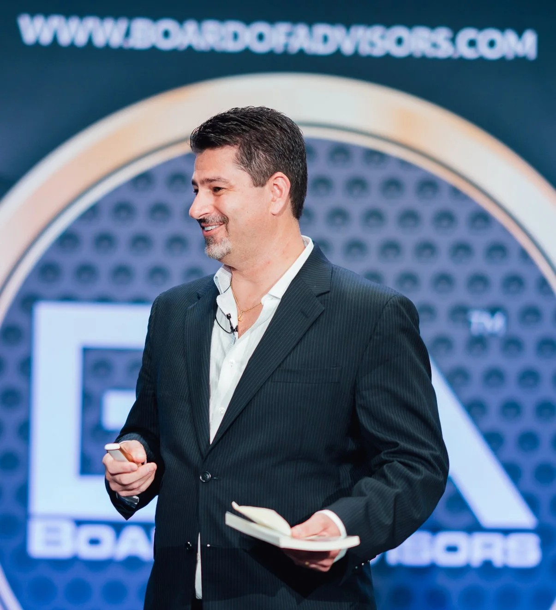
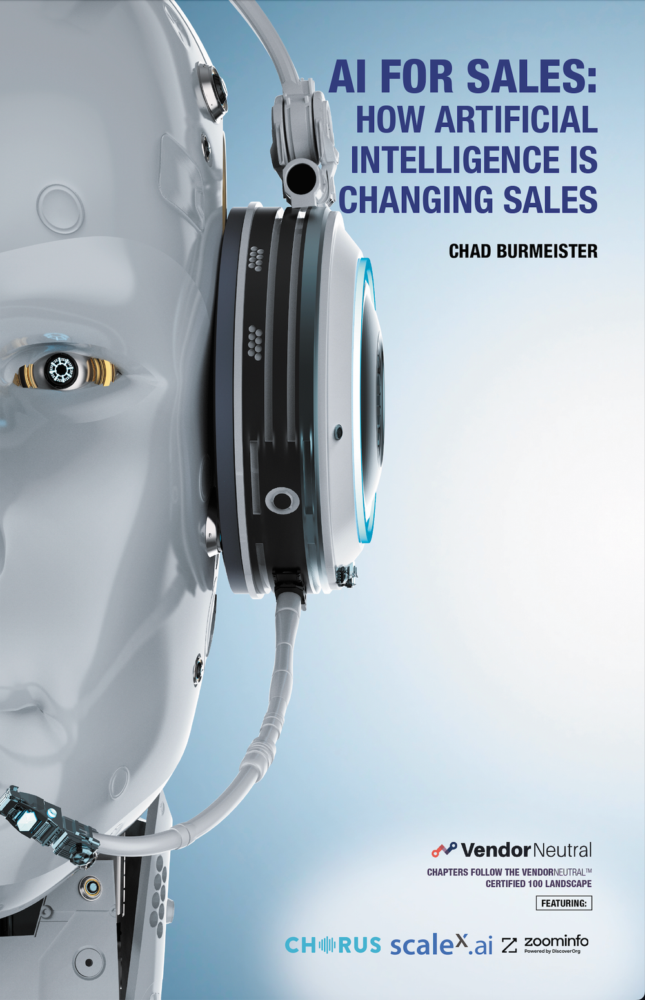
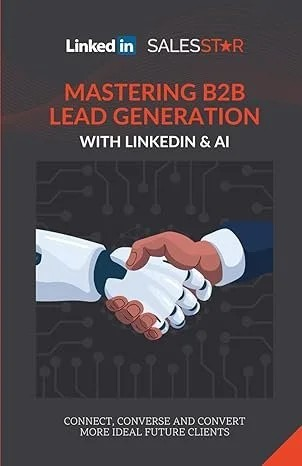

Sales & Business Development Leader · Denver, Colorado
For 25+ years I've led sales and business development organizations at companies like ON24, RingCentral, Cisco-WebEx, Riverbed, ConnectAndSell — and most recently Informatica, a Salesforce company. Along the way I founded BDR.ai, wrote 9 books, and was named to the Forbes Next 1000.

Where I've Led
From launching virtual sales teams in the early days of SaaS to building AI-powered business development organizations today.
Results That Matter
Annual pipeline engine architected across Enterprise, Industry, Commercial, Specialist, and Inbound BDR teams at Informatica.
More meetings scheduled by phone after deploying AI-for-sales technology like Nooks.ai and Buzz.ai.
Books published — from the Sales Hack series to AI for Sales 2.0, drawing on 100+ conversations with sales innovators.
Author
Practical playbooks for sales leaders, SDRs, and founders who want to out-think — not just out-work — the competition.
Inside conversations with 100+ innovators shaping the future of selling — from discovery to deal-close.
Order on Amazon →
"In sales, time kills deals. In AI for Sales, AI kills time." — Dr. Joel Le Bon, from the foreword.
Order on Amazon →
Proven LinkedIn power sequences for SDR/BDR, AE, ABM, and recruiting teams.
Order on Amazon →What Others Say
"I have always had the utmost respect for Chad as a sales leader… He is innovative, open, and his ability to blend sales with marketing to build a revenue engine is something to watch."
"Chad was instrumental in taking the BDM team to the next level of professionalism and performance. His ability to lead and scale the BDR function, powered by AI, had significant impact on our business — ~$.5B high-quality PipeGen."
Conversations with CEOs and technologists from companies like ZoomInfo and Nooks.ai on human-agentic selling, hyper-personalization, and the exponential mindset.
Listen & Subscribe